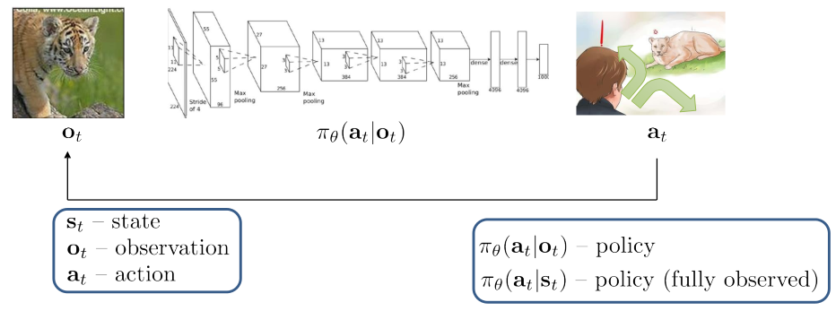
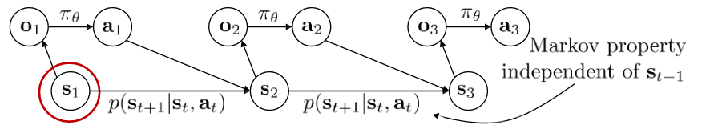
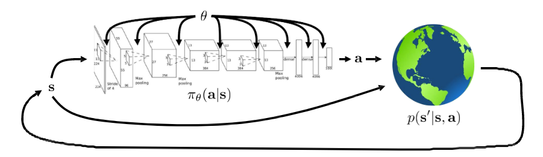

Introduction to reinforcement learning
Overview of Reinforcement Learning
Reinforcement Learning (RL) is the art of decision making. It is about an agent learns to make decisions by interacting with an environment to maximize cumulative rewards. There have been a number of advances in deep learning over the last decade that enhanced the robustness and effectiveness of reinforcement learning. Reinforcement learning nowadays has been applied in various domains, including robotics, game playing, autonomous vehicles, and more.
Definition of Deep Reinforcement Learning
Something about definitions & notation
Here, I recommend this textbook named Mathematical foundation of reinforcement learning for studying the fundamental concepts related to classical reinforcement learning.
- $\mathbf{s}_{t}$ - state
- $\mathbf{o}_{t}$ - observation
- $\mathbf{a}_{t}$ - action
- $\pi _{\theta}({\mathbf{a} _{t}} | \mathbf{o} _{t})$ - policy (partially observed) - Instead, it receives an observation $\mathbf{o} _{t}$, which might be a partial or noisy view of the true state. This policy defines the probability of agent taking action $\mathbf{a} _{t}$ at the given observation.
- $\pi _{\theta}({\mathbf{a} _{t}} | \mathbf{s} _{t})$ - policy (fully observed) - In a fully observed environment, the agent has access to complete state $\mathbf{s} _{t}$ of environment. The policy $\pi _{\theta}(\mathbf{a} _t | \mathbf{s} _t)$ defines the probability of agent taking action $\mathbf{a}_t$.
Among all of them, important definitions to know are the state which we denote $\mathbf{s}_{t}$, the observation $\mathbf{o} _{t}$ and the action $\mathbf{a} _{t}$. Then, the observation and state could be related to one another by the following graphical model where the edge between observations and actions is policy, and state satisfies the Markov property.
We’ll start with something called Markov chain, which is named after Andrei Markov who was a mathematician pioneered the study of stochastic processes. The Markov chain has a very simple definition，it consists of just two things, a set of states s and a transition function, which means that the state at time $t+1$ is independent of the state at time $t-1$, one condition on the current state $\mathbf{s}_{t}$.
Markov chain:
- $\mathcal{M} = {\mathcal{S}, \mathcal{T}}$
- $\mathcal{S}$ - state space, state $s \in \mathcal{S}$ (discrete or continuous)
- $\mathcal{T}$ - transition operator $p(s_{t+1}|s_{t})$, a sort of linear operator, it can also be referred to as a transition probability or a dynamics function.
It sounds like a little weird, why is it refferred to an operator?
Answer: This operator emphasizes how the Markov chain’s dynamics are governed: it takes the current distribution of states and produces the next distribution, much like how a function or matrix transforms inputs to outputs in mathematics. It will help us capture the essence of how states evolve over time in the Markov process.
If we represent the probabilities of each state at time step $t$ as a vector, we could call it $\mu_{t,i}=p(s_{t}=i)$. Let’s say we have $n$ states, each with its own probability distribution represented by a probability vector $\vec{\mu _{t}}$, where $t$ represents the time step. Then, the transition probabilities as a matrix, where the $ij$-th entry is the probability of going into state $i$ if you are currently in the state $j$, the corresponding formula is $\mathcal{T} _{i,j}= p(s _{t+1} = i | s _{t}=j)$. Now, we could express the vector of state probabilities at the next time step $\vec{\mu _{t+1}} = \mathcal{T}\vec{\mu _{t}}$.
However, the Markov chain itself doesn’t allow us to specify a decision, as it lacks the notion of actions. In order to go towards the notion of actions, we have to turn the Markov chain into a Markov decision process (MDP).
Markov decision process:
- $\mathcal{M} = {\mathcal{S}, \mathcal{A}, \mathcal{T}, r}$
- $\mathcal{S}$ - state space, state $s \in \mathcal{S}$ (discrete or continuous)
- $\mathcal{A}$ - action space, actions $a \in \mathcal{A}$ (discrete or continuous)
- $\mathcal{T}$ - transition operator, it’s not a matrix any more, but a tensor! Because it includes next state, current state, and current action.
- $r$ - reward function, $r: \mathcal{S}\times \mathcal{A} = \lbrace (s,a)| s \in \mathcal{S}, a \in \mathcal{A} \rbrace \rightarrow \mathbb{R}$, the reward function is a mapping from the Cartesian product of the state and action space into real valued numbers.
Some useful tricks we mentioned earlier can still be applied here, let $\mu_{t,j} = p(s_{t}=j)$, and we could have another vector $\xi_{t,k}=p(a_{t}=k)$ that will denote the probability of taking some action. Also, transition operator could be written as a tensor, so $\mathcal{T} _{i,j,k}= p(s _{t+1}=i | s _{t}=j,a _{t}=k)$ is the probability of entering state $i$ if you’re in state $j$ and take action $k$. The vector of state probabilities at the next time step will be a little bit complex,
Before we go to the next part, we’d like to extend this Markov decision process definition, which will allow us to bring in the notion of observations. So a partially observed Markov decision process further augments the definition within two additional objects, observation space $\mathcal{O}$ and emission probability $\mathcal{E}$.
Partially observed Markov decision process:
- $\mathcal{M} = {\mathcal{S}, \mathcal{A}, \mathcal{O}, \mathcal{T}, \mathcal{E}, r}$
- $\mathcal{S}$ - state space, state $s \in \mathcal{S}$ (discrete or continuous)
- $\mathcal{A}$ - action space, actions $a \in \mathcal{A}$ (discrete or continuous)
- $\mathcal{O}$ - observation space, observations $o \in \mathcal{O}$ (discrete or continuous)
- $\mathcal{T}$ - transition operator, a tensor!
- $\mathcal{E}$ - emission probability $p(o_{t}|s_{t})$
- $r$ - reward function, $r: \mathcal{S}\times \mathcal{A} =\lbrace (s,a)| s \in \mathcal{S}, a \in \mathcal{A}\rbrace \rightarrow \mathbb{R}$
Goal of reinforcement learning
We will talk about partially observed later, for now let’s just say our policy is conditioned on $s$, and $\theta$ corresponds to the parameters of the policy. If policy is a kind of neural network, we could find that $\theta$ denotes the parameters of this deep neural net. The state input policy and action go into the transition probability $p(\mathbf{s}^{\prime}|\mathbf{s}, \mathbf{a})$, which produces the next state.
In this process, we could write down a probability distribution over trajectories, which are sequences of states and actions by using chain rules.
Generally, $\pi_{\theta}(\mathbf{a} _{t}|\mathbf{\mathbf{s} _{t}})$ given $\mathbf{s} _{t}$ allows us to get a distribution of our actions condition on states. What we can do is to group state and action together into a kind of augmented state. And now the augments states actually form a Markov chain as the following figure. We could write down the enhanced transition operator (personal nick name for this operator) in this augmented Markov chain.
Next we could do is to write the objective by linearity of expectation as the sum over time of the expected values under the state action marginal $p_{\theta}(\mathbf{s} _{t}, \mathbf{a} _{t})$ in this Markov chain, cause this transition operator is product of transition and policy with good linear mathematical structure.
Infinite horizon case
What if $T \rightarrow \infty$ ?
First, if that happens our objective might become not so clear. Please imagine that you have a sum of infinite positive numbers rewards, which is infinity. We need to make the objective finite, using discount will solve this problem，or choose a mathematical operation divide by $T$ so that the sum of the expectations of the marginals becomes dominated by the stationary distribution terms.
Now, we could ask a more specific question, does $p(\mathbf{s} _{t},\mathbf{a} _{t})$ converge to a stationary distribution?
If this is possible, that means we could write the stationary distribution and it must obey this equation, $\mu=\mathcal{T}\mu$. We could prove this conclusion under a few technical assumptions namely ergoicity and chain being aperiodic. Ergoicity means every state can be reached from every other state with non-zero probability, it prevents a situation where if you start in one part of the MDP, you might never reach another one. It dives us into characteristic equation in linear algebra to solve
$$(\mathcal{T}-\mathbf{I})\mu=0$$We could find $\mu$ by finding the eigenvector with eigenvalue one for the matrix defined by $t$. And $\mu$ is eigenvector of $\mathcal{T}$ with eigenvalue $1$, it always exists under ergodic and aperiodic assumption.
When we consider the average reward case divided by $T$, the limit as $t$ approaches infinity will be the expected value of the reward. Formally, this is expressed as
In simpler way, as $T$ (the number of time steps) becomes very large, the average reward converges to the expected value of the reward given the policy $p_{\theta}$.
Algorithm
The reinforcement learning algorithms presented in this discussion, all of them would have more or less the same anatomy. The first part of our workflow is to generate samples, reinforcement learning is about learning through trial and error. Simply speaking, samples are the paths we have taken through the environment to reach our current position. Imagine that we have collected some samples. The next step is to find a suitable model for the dynamics in our model-based reinforcement learning algorithm. Then we turn into the final part, which is where you actually change your policy to make it better.
$$ \theta \leftarrow \theta +\alpha \nabla_{\theta}\mathcal{J}(\theta) $$
comming soon…
Value functions
comming soon…